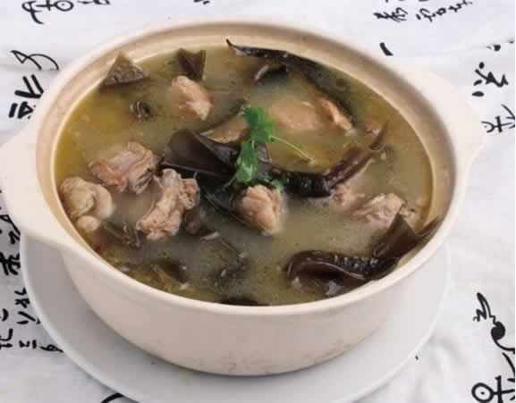
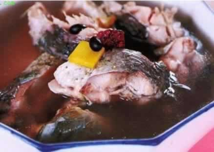

准妈妈怎么吃可预防与缓解水肿？
如果某天你发现你的脚踝、小腿、胳膊或者是脸越来越肿了，而且用手指对肿起部位按压下去，当压下后，皮肤会明显地凹下去，而不会很快地恢复，这表示你遭遇了孕期水肿。不过准妈妈不用担心，水肿现象一般在生完宝宝后会自然消失。那么怀孕期间，准妈妈可以吃些什么食物来缓解水肿呢？
总的来说，准妈妈每天都应摄取高蛋白、低盐的食物，注重进食足量的蔬菜水果，以及少吃或不吃难消化和易胀气的食物，同时还可以摄取一些具利尿作用的食物，这样就可以有效预防与缓解孕期水肿。下面介绍几种有效缓解水肿的食物：
1、土豆：土豆含有丰富的无机盐，而无机盐中的钾含量很高，钾不仅能帮助身体排出因食盐过多而滞留在体内的钠，还能促进身体排出多余水分。
2、黄瓜皮：黄瓜皮中所含的异皮苷有较好的利尿作用。所以，黄瓜可以连皮生吃，如果连着干燥后的瓜蒂，藤蔓一起煮水喝，利尿效果更佳。但是，胃肠易寒冷的人，不适宜过多食用生黄瓜。
3、大麦：不但利尿，还有助于美容，可以让你的皮肤充满光泽。
4、芹菜：可以调节生理循环，是不可多得的健康食品。
5、红豆：红豆中除了含有丰富的钾之外，其外皮中所含的皂角苷有很强的利尿作用，对脚气病和因肾脏功能衰退引起的脸部，脚部水肿，有很好的改善之效。
6、西瓜：西瓜含有一种氨基酸类成分，叫做瓜氨酸，有很好的利尿功效。
7、鲤鱼：以鲤鱼作食补材料，能消除孕妇怀孕期间的水肿，促使产后母乳分泌顺畅。
8、苹果：含有水溶性纤维质果胶，可解决便秘，下痢，有助于代谢掉体内多余盐分。
9、薏仁：在《本草纲目》中记载，薏仁味甘，微寒，可健脾益胃、补肺气消热，去风，去湿，具有消水肿的美容功效。
10、玉米须：性味甘淡平，功能利水消肿，兼能利湿退黄。
本周推荐尝试食谱1：
海带炖排骨
推荐理由：本食谱做法简单，口感美味，可以清热怯毒活血降压，适用于孕妇水肿。
食谱原料：
猪小排 600克，海带、葱白、姜、大蒜、白糖、生抽、食盐、花生油各适量，蚝油 1小勺。
制作方法：
1、排骨约600g解冻。
2、海带提前一夜泡发好，切条打成结，用热水煮2分钟后控水备用。
3、葱白切段，老姜切片，大蒜切片。
4、将解冻后的排骨焯一下水，捞出控干水分。
5、锅内放适量的花生油，放入葱白、老姜、蒜瓣爆香。
6、闻到香味后，放入焯水后的排骨炒至金黄色。
7、差不多油快炒没时把海带放进去，翻炒均匀。
8、加适量白糖，生抽，老抽，盐和热水没过排骨，大火烧开转成小火炖。
9、40-50分钟后，加一小勺蚝油进去，然后大火收汁即可出锅了。
本周推荐尝试食谱2：
红枣黑豆炖鲤鱼
推荐理由：此菜对妊娠手足发肿或患有寒冷症、手足冰冷者有效，可预防孕妇发生水肿。
食谱原料：
鲤鱼1条（约500克），红枣10粒，黑豆20克。
制作方法：
1、将鲤鱼宰净，去鳞、去鳃、去肠脏。
2、黑豆放锅中炒至豆壳裂开，洗净。
3、红枣去核，洗净。
4、将鲤鱼、黑豆、红枣放入炖盅里并加入适量水，盖好，隔水炖3小时即成。